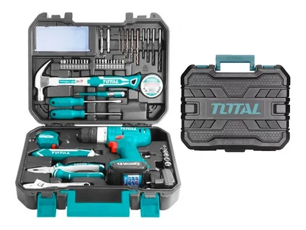

5 herramientas básicas que no pueden faltar en tu hogar
Contar con un set de herramientas en casa no solo te ahorra dinero, también te da autonomía para resolver reparaciones simples y pequeños proyectos. En FerreNova creemos que toda familia debería tener un kit básico que permita enfrentar emergencias cotidianas.
- Martillo de uña: ideal para colgar cuadros o reparar muebles.
- Juego de destornilladores: planos y de cruz para múltiples usos.
- Llave ajustable: útil en cañerías y tuercas de distinto tamaño.
- Cinta métrica: fundamental para medir antes de instalar o cortar.
- Alicates universales: perfectos para sujetar, doblar o cortar alambres.
Estas cinco herramientas son la base de cualquier caja de herramientas. Con ellas puedes resolver la mayoría de situaciones sin necesidad de llamar a un técnico. Y lo mejor: son económicas y fáciles de conseguir en nuestra ferretería.
Volver